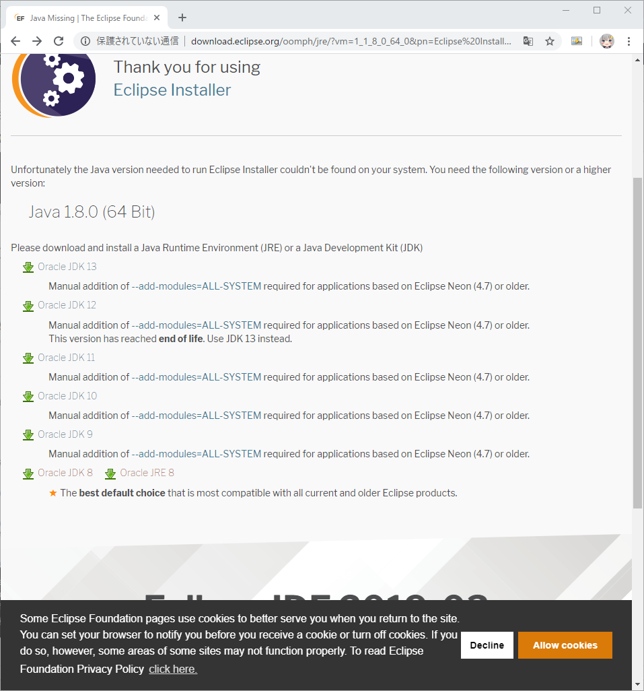
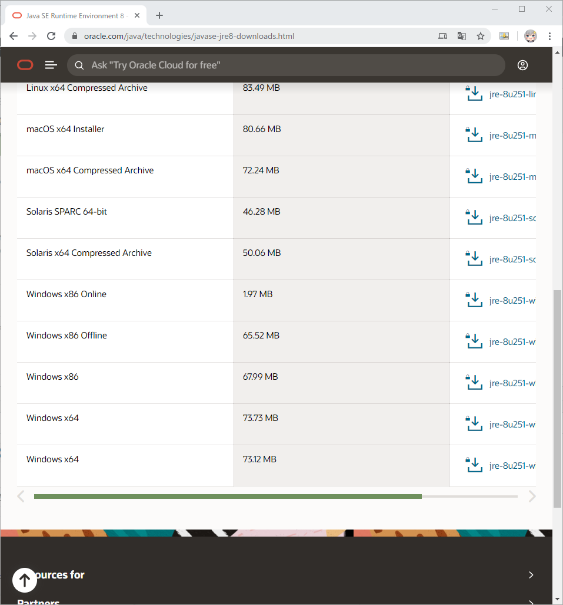

JAVA 프로그램 개발을 위한 이클립스 환경 구축
JAVA 프로그램 개발을 위한 이클립스 환경 구축
안녕하세요.
이번에 소개할 내용은 JAVA 개발을 위한 이클립스 환경 구축을 해보도록 하겠습니다.
우선 자바개발에 필요한 프로그램을 다운로드를 하겠습니다.
- 이클립스
- JDK 또는 OpenJDK
이클립스를 다운받기 위해 아래의 이클립스 사이트로 접속해 주시기 바랍니다.
다운로드 버튼을 누르시면 아래와 같이 다운로드가능한 버전과 32비트/64비트에 맞게
이클립스를 바로 다운로드 가능하게 표시가 됩니다.
다운로드를 해서 이클립스를 받아주시기 바랍니다.
다운로드를 시작하면 하단에 파일이 다운로드 되는것을 보실수 있습니다.
이클립스는 후원으로 제공을 하고 있기에 후원을 해주실분은 원하시는 금액으로 후원도 가능 합니다.
이클립스가 다운로드 된것을 확인 하실수 있습니다.
다운로드 받으신 eclipse-inst-win64.exe를 실행해 주시기 바랍니다.
이클립스는 기본적으로 JAVA가 설치가 되어 있어야만 설치가 가능 합니다.
만일 JAVA가 설치가 안되어 있으시면 아래와 같이 메세지가 나오게 되며 예를 눌러주시면
JDK를 다운받을수 있는 페이지가 열리게 됩니다.
JDK는 여러분들의 개발상황에 맞게 다운로드를 해주시기 바랍니다.

저는 Oracle JRE 8을 다운로드 하도록 하겠습니다.

Oracle JRE 8링크를 클릭하시면 아래의 다운로드 페이지로 이동 합니다.
각자의 환경에 맞는 파일을 다운로드를 받아주시기 바랍니다.
저의 경우에는 Windows x64의 jre-8u251-windows-x64.exe를 다운로드 하겠습니다.

다운로드를 하면 아래와 같은 메세지창이 나오게 됩니다.
체크박스에 체크를 해주시면 다운로드 버튼이 활성화가 되어 다운로드 하실수 있습니다.
다운로드를 누르시면 오라클 계정으로 로그인을 하라고 나오게 됩니다.
계정을 가지고 계시면 로그인을 해주시고 없으시면 신규추가로 등록을 해주시기 바랍니다.
오라클 계정으로 로그인 하시면 아래와같이 하단에 JRE파일이 다운로드 되는것을 확인 하실수 있습니다.
다운로드한 jre-8u251-windows-x64.exe를 설치를 해주시기 바랍니다.
JAVA 설치가 정상적으로 완료 되었습니다.
이젠 이클립스를 설치를 하도록 하겠습니다.
eclipse-inst-win64.exe를 실행해서 설치를 진행해 주세요.
아래와 같이 나오시면 자기가 개발할 환경에 맞는것을 설치하시면 됩니다.
저는 Eclipse IDE for Enterprise Java Developers를 설치하도록 하겠습니다.
아래의 창이 나오시면 승인을 눌러주세요.
이제 설치가 진행되기 시작 합니다.
이클립스 설치가 완료 되었습니다.
LAUNCH를 클릭하시면 이클립스가 실행 됩니다.

이클립스가 기동되면서 워크스페이스 경로를 지정하라고 나오게 됩니다.
자신의 개발상황에 맞게 선택을 해주시면 되겠습니다.
이렇게 해서 JAVA의 JDK 설치부터 이클립스 설치까지 모두 완료 되었습니다.